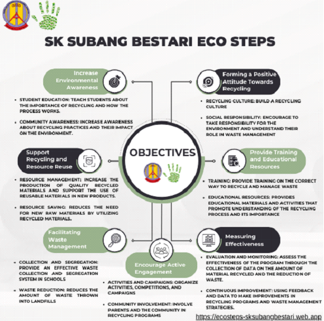
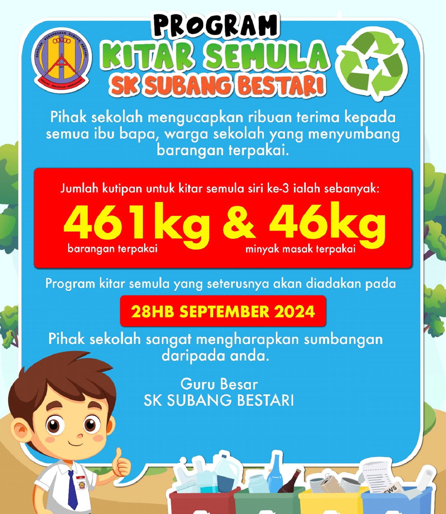
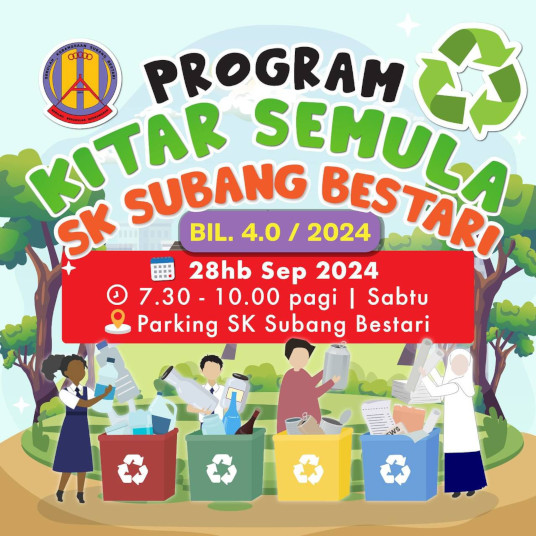
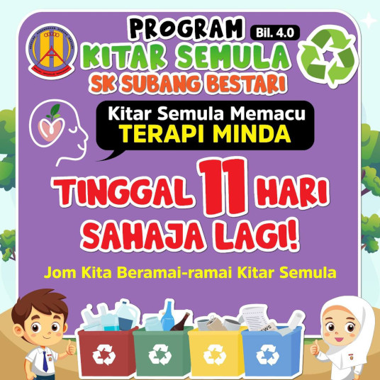
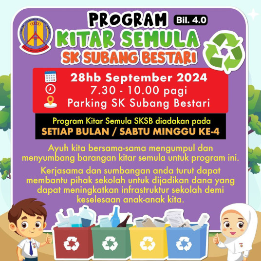
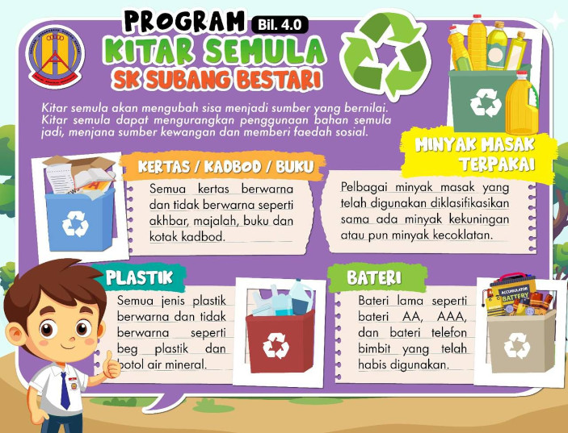
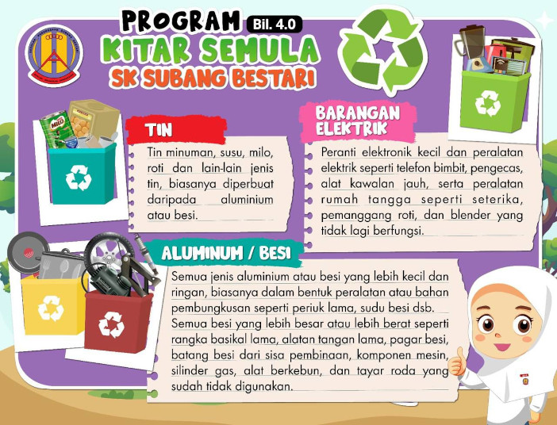
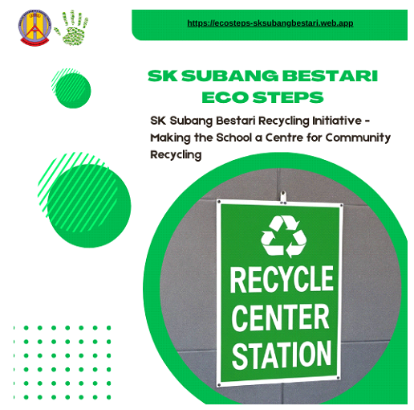
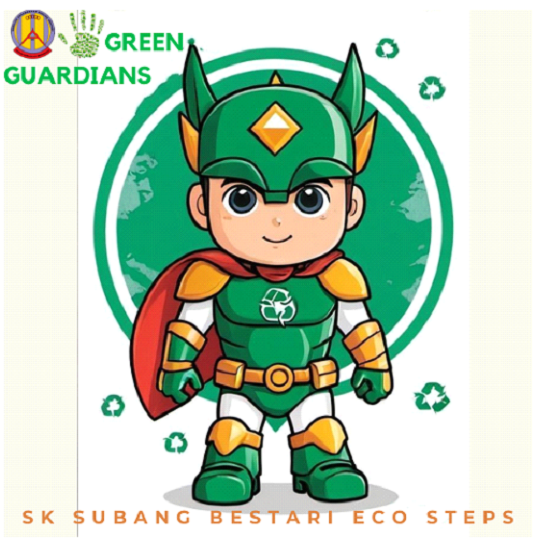
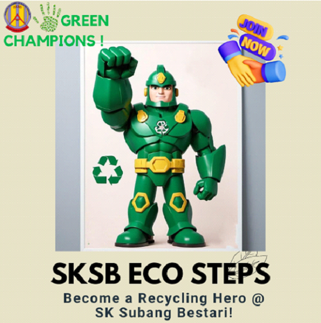

SKSB Eco Steps is a recycling program run by Sekolah Kebangsaan Subang Bestari (SKSB) with a focus on education and waste management among students, parents and the community. The main objective of the program is to raise awareness of recycling and environmentally friendly practices, while promoting better waste management. Here are some of the main objectives of SKSB Eco Steps in recycling:

SKSB Eco Steps aims to change attitudes and behaviours towards waste management and recycling among students, parents and the community. With a focus on education, effective management, and active engagement, the program seeks to promote sustainable and environmentally friendly recycling practices.






SK Subang Bestari Recycling Initiative: Making the School a Centre for Community Recycling
Sekolah Kebangsaan Subang Bestari has launched an ongoing recycling initiative to make the school a recycling hub for the school and local community. This initiative is scheduled to take place every fourth week of every month, with the main aim of fostering a culture of recycling among students, teachers, parents, and the local community.

This recycling program aims to:
PROGRAM IMPLEMENTATION
Every month, on the fourth week, SK Subang Bestari will hold a recycling collection session. This activity involves several main steps:
IMPACT AND HOPE
With the implementation of this program, SK Subang Bestari not only strives to preserve the environment but also build a community that is more responsible and sensitive to environmental issues. The school hopes that this initiative can encourage more schools and communities to practice recycling and participate in efforts to care for the earth.
SK Subang Bestari's recycling initiative is a good example of promoting green practices and showing how schools can act as centers of education and recycling collection for the local community.
Green Guardians SK Subang Bestari is a recycling squad established with the main purpose of educating and raising awareness about recycling practices among students, parents, and the local community. This squad acts as a proactive agent of change in promoting environmental responsibility and fostering a recycling culture throughout the Subang Bestari area.
MAIN OBJECTIVES AND TASKS
CAMPAIGNS AND MISSION TOUR
COMMUNITY ENGAGEMENT
APPROACHES AND ACTIVITIES
LONG TERM GOALS
The long-term goal of Green Guardians SK Subang Bestari is to create a deep and comprehensive recycling culture in the community. With continuous education, effective campaigns, and active involvement from all parties, this squad hopes to reduce waste, preserve the environment, and shape a generation that cares more about the earth.
With commitment and continuous efforts, Green Guardians SK Subang Bestari is expected to be a pioneer in promoting recycling practices and make Subang Bestari an example in responsible waste management.
Green Guardians SK Subang Bestari is a recycling squad established with the main purpose of educating and raising awareness about recycling practices among students, parents, and the local community. This squad acts as a proactive agent of change in promoting environmental responsibility and fostering a recycling culture throughout the Subang Bestari area.
Join SKSB's Green Champions: Become a Recycling Hero at SK Subang Bestari!
Are you someone who cares about the environment? Want to make a meaningful change and have a positive impact on the community?
Green Champions SKSB offers you the opportunity to join our volunteer squad and get involved in interesting recycling activities at Sekolah Kebangsaan Subang Bestari. As a Green Champions member, you will play an important role in our efforts to foster a recycling culture and care for the earth.
Why Join SKSB's Green Champions?
How to Join:
Don't miss the opportunity to be a part of positive change! Join SKSB's Green Champions today and be part of the effort to protect the earth and promote recycling.
Together, we can create a greener and cleaner future!